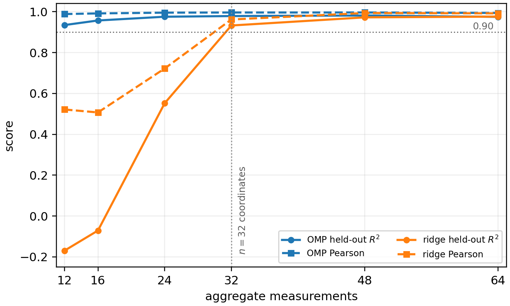

Preprint · August 4, 2026
Mechanistic
Tomography
Designed Measurement for Control-Oriented Interpretability
Mechanistic interpretability tries to recover quantities a model does not expose directly: represented states, component effects, interactions, and responses to interventions. Mechanistic tomography treats this as a measurement-design problem.
- A
- which interventions we make
- x
- the internal effect map we want
- w
- what the chosen measurement model misses
01 · The idea
A common language—and a procedure for deciding what to measure next.
Coordinate patching, attribution patching, subset interventions, Hessian-vector products, and lifted interaction recovery do not necessarily estimate the same quantity. They do, however, share a measurement structure: each method declares a target, obtains measurements through a particular form of model access, incurs structured error, and needs validation.
The operational rule is simple. Start with the least costly measurements available. Test the resulting map on held-out interventions at the scale where it will be used. Calibrate a simple mismatch when that is enough. When structured residuals remain, add interactions, measure curvature, or change the basis.
02 · The procedure
Measure, test, then escalate only when the residual requires it.
- 1Declare the target.
State the effect map, basis, intervention family, and intended use.
- 2Use the cheapest access path.
Forward probes, gradients, or curvature measurements impose different costs.
- 3Test held-out interventions.
Fit quality alone cannot show whether the map predicts an action not yet taken.
- 4Escalate the measurement family.
Persistent structure in the residual tells us what the current method cannot see.
03 · What the paper shows
The formulation changes both how measurements are compared and what existing methods can do.
- Observer error reaches control. In a two-HMM wind tunnel, closed-loop target error tracks observer error under a fixed controller and actuator.
- Aggregate measurements can replace exhaustive probes. When an effect map is compressible, sparse recovery needs fewer forward interventions than one-component-at-a-time measurement.
- Finite probes can extend local gradients. A small calibration set tests—and sometimes corrects—attribution patching at the intended intervention scale.
- Interactions require richer measurements. Lifted forward measurements and designed Hessian-vector products recover pair structure missed by first-order maps.
- The required model is basis-relative. Tracr and GPT-2-small IOI show why the intervention basis determines which interactions must be represented.

Why control?
Once an estimate guides an intervention, it acts as an observer. A useful observer must predict what the intervention will actually do—not merely reconstruct a mechanism on the data used to fit it.
Control is the paper’s principal validation setting because it makes measurement error consequential. The framework itself applies more broadly to internal states and finite intervention effects.
04 · Read and cite
A public, frozen first version.
Version 1.0 is preserved by Zenodo under a permanent DOI. An arXiv version is forthcoming.
@misc{erramilli2026mechanistic,
title = {Mechanistic Tomography: Designed Measurement
for Control-Oriented Interpretability},
author = {Vijay Erramilli},
year = {2026},
version = {1.0},
doi = {10.5281/zenodo.21797578},
url = {https://doi.org/10.5281/zenodo.21797578}
}